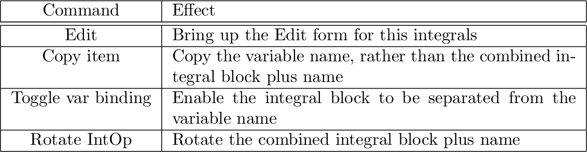
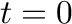

The integral-block-specific commands on the context menu are:

Editable attributes include the variable's name and its initial value at . The main role of the Edit form is to provide the name for the integrated variable--other details included on the form can be controlled from elsewhere in the program. Type the name you want to give the variable into the Name field and press Enter or click on OK. You can also name the variable via the context menu item ``Rename all instances''.
The flows to be integrated are connected to the top port of the integral
block, labelled ` '. The bottom port, labelled `0', can optionally
be connected to a constant, parameter or variable, which is used to
specify the initial value of the integral, following the same rules as
the variable initial value field.
'. The bottom port, labelled `0', can optionally
be connected to a constant, parameter or variable, which is used to
specify the initial value of the integral, following the same rules as
the variable initial value field.